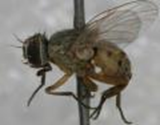

| Home |
| MAIZE |
| 1. Maize Shoot fly |
| 2. Stem Borer |
| 3. Pink Stem Borer |
| 4. Corn worm / Ear worm |
| 5. web worm |
| 6. aphid |
| 7. shoot bug |
| 8. climbing cut worm |
| 9. ash weevil |
| 10. phadka grasshopper |
| 11. leafhopper |
| questions |
| download notes |
PESTS OF MAIZE :: Major Pests :: Maize Shootfly
1. Maize shootfly: Atherigona orientalis (Muscidae: Diptera)
| Distribution and status: Uttar Pradesh, Andhra Pradesh, Tamil Nadu, Maharashtra, Karnataka. Host range: Maize, sorghum, ragi and bajra Damage symptoms: The maggot feeds on the young growing shoots resulting in “dead hearts”. |
 |
Bionomics: Small grey coloured fly.
Management
- Grow resistant cultivars like DMR 5, NCD, VC 80
- Furrow application of phorate granules 10 G 10 kg/ha (or) lindane 6 G 25 kg per ha